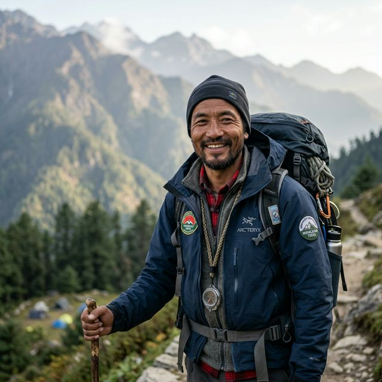

ESTABLISHED 2007
UNLEASH THE ADVENTURER IN YOU
At BASSWOODS, we specialise in crafting life-affirming outdoor holidays across the wild Northeast. Since 2007, we've pioneered the gold standard of luxury wilderness exploration.
ESTABLISHED 2007
At BASSWOODS, we specialise in crafting life-affirming outdoor holidays across the wild Northeast. Since 2007, we've pioneered the gold standard of luxury wilderness exploration.
Years of legacy
Expeditions
Secret Locations
Expert Led


In the heart of the Northeast, adventure is not measured in miles, but in the rhythm of the wild. Our glamping experiences are designed as sanctuaries—breathable anchors in the shifting mists of the Ziro plateau and the deep Naga hills.
Sheltered by the same peaks that have watched over these valleys for aeons. At BASSWOODS, we don't just pitch tents; we craft a bridge between the absolute untamed and the absolute refined.
Operating since 2007, we know the Northeast like no one else. Every path we take is one we've curated over decades.
From rooftop tents to professional off-road 4x4s, we provide the highest quality equipment for your safety and comfort.
We respect the wild. Our glamping operations are designed to leave zero footprint while providing maximum luxury.

From the living root bridges of Meghalaya to the vibrant Hornbill Festival of Nagaland, we take you deep into the heart of tribal culture and untouched nature.
Discover Locations
Our tents are engineered for the extreme humidity and sudden temperature drops of the Ziro plateau and Nagaland peaks.
.jpeg)
Every vehicle in our fleet is fitted with heavy-duty suspension systems to handle the 'Unseen' Northeast tracks with ease.
From satellite comms to professional grade medical kits, we bridge the gap between absolute wild and absolute safety.
Rooted in the spirit of the Northeast, BASSWOODS was born around the fires of the 2019 Orange Festival. From a single campsite to the region's premier adventure collective, we've spent every season pushing deeper into the last wild frontier.
"The Ziro Festival camping package was flawless. Everything from the pre-pitched tents to the local Apatani rice beer sessions at the bonfire. Basswoods really knows how to curate the vibe."
"Rented a Mahindra Thar for my solo drive to Tawang. The vehicle was in mint condition, and the maintenance support team was just a call away. Best way to explore the frontier."
"Dzukou Valley trek is hard, but Basswoods made it a memory for life. Our guide was native to the valley and the heritage stories shared were magical."
"Hornbill can be overwhelming, but having a base camp exactly where the action is made all the difference. The hot showers were a lifesaver in the Nagaland cold!"
"Unreal paragliding experience at Serchipp. Basswoods logistics from Aizawl was seamless. Definitely the gold standard of adventure tourism in the NE."
"The Akon after-party campaign at Cherry Blossom was next level. Poolside jams and shuttle service made it worry-free. Basswoods rules the festival circuit."
"Waterfall treks in Cherrapunji led by Basswoods guides are truly off the beaten path. No generic tourist traps. Pure raw adventure."
Yes, Indian citizens require an Inner Line Permit (ILP) for Arunachal Pradesh, Nagaland, and Mizoram. Foreign nationals require RAP/PAP. Basswoods offers free coordination for all confirmed bookings.
Our primary vehicle hub is in Guwahati (Assam), conveniently located near the airport (GAU). However, we can arrange drop-0ffs in Shillong or Kohima for specific expedition packages.
All our festival and permanent hubs feature hygienic western-style private toilets with running water. For high-wilderness expeditions, we use eco-friendly portable systems to protect the environment.
Yes, every Basswoods camp features high-capacity communal charging docks for mobile units and professional camera equipment. Our Dima Hasao and Kohima hubs use 24/7 solar-backup units.
Every expedition team carries a Level-2 medical kit and has satellite-sync for remote coordinates. We maintain direct links with regional medical centers in Shillong, Kohima, and Itanagar for emergency evacuation protocols.

"The wild is not a place to visit, it is a home to return to." Experience the absolute immersion of the Basswoods journey.

Beyond the paved roads, into the Tawang mists where time is measured by the turning of prayer wheels. A pilgrimage into the prehistoric silence of the Himalayas.

A vertical world of mist-covered ridges and vibrant bamboo forests. Experience the elevation and hospitality of India's best-kept secret.

A tapestry of warrior heritage and rolling green horizons. From the Hornbill Festival to the Konyak villages, breathe the soul of the Naga hills.


The real adventure is not found in the vistas, but in the smoke of a bamboo-fire kitchen. We take you into the Monpa and Ao homes where flavours have been cured over generations. Experience the mastery of artisanal bamboo crafts—where every basket tells a story of the forest. This isn't culture as a demonstration; it is the living essence of the Northeast.

Our guides aren't just experts in technical navigation; they are the keepers of legends. They know the ridges of Nagaland and the backways of Arunachal because they were born on them. At BASSWOODS, we believe the best stories aren't in books, but in the whispers of a guide who can read the clouds before the storm.
From the highest peaks of Arunachal to the deep valleys of Meghalaya, we are your gateway to the unseen Northeast.
Every piece of gear in our inventory is tested against the humidity of the valleys and the frost of the peaks. Our catalog ensures your squad is over-prepared for the elements.
Double-walled, ripstop nylon with a 3000mm hydrostatic head. Best for Meghalaya monsoons and valley camps.
Geodesic stability with 5-pole reinforcement. Engineered for the 14,000 ft ridges of Arunachal.
Large communal pavilion (600 sq.ft) with internal heating and integrated illumination.
Rated for 10°C Comfort / 0°C Limit. Synthetic fill to handle valley humidity without loft loss.
700 Down fill with DWR coating. Critical for Dzukou winter and high-altitude Tawang expeditions.
Closed-cell foam with R-value 2.5. Prevents ground-conducted heat loss in alpine terrain.
The Northeast is not a single entity, but a collection of ancient kingdoms, diverse biomes, and complex tribal jurisdictions. Our encyclopedia provides the technical foundation for your expedition.
The northernmost frontier of the Northeast, sharing boundaries with Bhutan, Tibet, and Myanmar. Arunachal is defined by its deep river valleys and high Himalayan ridges. Home to 26 major tribes and over 100 sub-tribes.
Alpine ridges, sub-tropical rainforests, and glacial basins.
Nyishi, Apatani, Adi, Mishmi, Monpa, Wancho, Nocte.
A land of legendary warriors and steep mountain ridges. Nagaland is a tapestry of 16 recognized tribes, each maintaining its own Morung (youth dormitory) systems and vibrant textile heritage. The state is world-renowned for the Hornbill Festival, the ultimate gathering of Naga cultural identity.
Steep hills, deep valleys, and high ridges (Mt. Saramati). Dense sub-tropical vegetation.
Angami, Ao, Konyak, Sumi, Lotha, Chakhesang, Sangtam, Phom, Yimkhiung.
Meghalaya is a high plateau of limestone caves, plunging waterfalls, and the world's highest rainfall zones (Mawsynram/Cherrapunji). The culture is matrilineal, where the youngest daughter inherits the family property. Known for its Living Root Bridges and crystal clear rivers.
Karst plateau, limestone caves, sheer cliff faces, and high-intensity rainfall biomes.
Khasi, Garo, Jaintia. Matrilineal social structure across all three groups.
Dominated by the mighty Brahmaputra river, Assam is a land of vast floodplains, emerald tea gardens, and the one-horned rhinoceros. It is the logistical and cultural heart of the Northeast, with a history spanning the Ahom dynasty and a vibrant mix of ethnic communities.
Alluvial floodplains, marshes (beels), and undulating tea-garden hillocks.
Assamese, Bodo, Mishing, Karbi, Dimasa, Tai-Ahom, Tea-Tribes.
The state tree of Nagaland. Found at altitudes of 1,500m to 4,000m. Bloom season peaks in Mar-Apr, transforming the Dzukou valley into a crimson horizon.
The Noble Orchid. One of the 1,000+ orchid species found in the Northeast. High humidity epiphytic growth, primarily in Sikkim and Arunachal river basins.
Knowledge is survival. Volume II dives deep into technical biomes, medical protocols, and culinary heritage. Essential reading for long-range expedition squads.
Acute Mountain Sickness (AMS) is the primary physiological variable above 2,500m. Symptoms include cerebrovascular dilation leading to persistent headache, hypoxia-induced insomnia, and gastrointestinal suppression. Protocol: Immediate cessation of all physical activity. Forced hydration (40-50ml/kg).
Grade-4 emergencies. Diagnostics: loss of coordination, altered mental status, and peripheral cyanosis. Protocol: Pressure simulation. High-flow O2 administration. Rapid descent to < 2,000m via 4x4 or aerial extraction if weather permits.
The bovine of the gods. Semi-wild, sacred, and the primary symbol of wealth across the Eastern Himalaya.
The Village Headman. The absolute authority in tribal jurisdictions. All BASSWOODS expeditions report to the Burra upon entry.
The mandatory travel document for Indian citizens entering restricted frontier states. Handled by our logistics hub.
Traditional 'Slash and Burn' cultivation. A seasonal visual hallmark of the Northeast hillsides.
Indigenous rice beers of Arunachal and Nagaland. Fermented using local yeast cakes ('Pika').
The Apatani term for fermented millet beer. A central element of the Ziro Festival culture.
The clan-based division of a Naga village. Crucial for understanding local social structures.
Traditional youth dormitory and community center of the Naga tribes. The repository of oral history.
The apex predator of the Khasi hills and Nagaland forests. Elusive, arboreal, and strictly nocturnal. Our trail cameras at Umrangso have recorded rare movements in 2024.
India's only ape species. Distinct 'hooting' calls define the dawn in Upper Assam and Arunachal. Their presence is a primary indicator of forest health.
The flame of the mountain. Blooms in late March across Sikkim and Tawang. The flowers are edible and used by BASSWOODS for seasonal camp concentrates.
The BASSWOODS GPS-Node Repository is a technical baseline for all frontier navigation. Appendix A provides the verified coordinate matrix for the Arunachal Pradesh sectors (West to East).
| Node ID | Location Node | Coordinates (DMS) | Altitude (M) | Classification | Status |
|---|---|---|---|---|---|
| BW-AP-TAW-001 | Tawang Base Hub | 27°35'12"N 91°51'34"E | 3,048 | PRIMARY HUB | 4G OPT |
| BW-AP-SEL-042 | Sela Pass Summit | 27°30'18"N 92°06'10"E | 4,170 | RECOVERY NODE | VHF ONLY |
| BW-AP-MEC-015 | Mechuka Valley Center | 28°36'04"N 94°07'25"E | 1,829 | LOGISTICS CORE | 2G / SAT-ONLY |
| BW-AP-ANI-088 | Anini (Mishmi Hills) | 28°47'20"N 95°54'12"E | 1,968 | EXPEDITION LAUNCH | VARIABLE BLKOUT |
| BW-AP-WAL-099 | Walong (India Start) | 28°07'15"N 97°00'22"E | 1,094 | FRONTIER EXTRACTION | DIPLOMATIC ESCORT |
All coordinates are verified as per the WGS84 datum. BASSWOODS updates this repository every quarter to reflect infrastructure changes. However, terrain variance may lead to a delta of ±5 meters. Use satellite-redundant systems at all times.